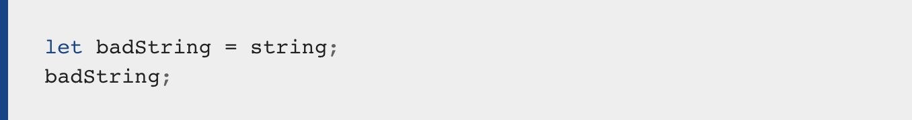
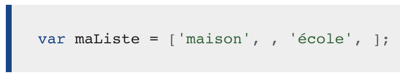
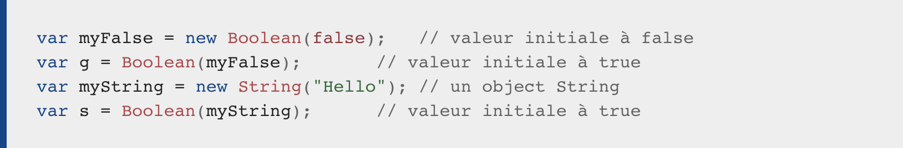

- type String : chaîne de caractères
- type Number : valeur numérique
- type Array : un tableau
- type Boolean : true ou false





En javascript on va attribuer un valeur à une variable. C'est cette dernière qui va définir le type de la variable. Explication, si les données qui va être attribuée à la variable est une chaîne de caratère, celle-ci sera de type STRING. En revanche, si on lui attribue true ou false, elle sera de type boolean. Vous pouvez voir la liste des différents type de variables ci-dessous :
Il est à noter qu'il n'est pas obligatoire de déclarer le type de la variable en javascript. Ce language à la capacité de le déduire. En effet, si l'on attribue la valeur true à une variable, le javascript va déduire qu'elle sera de type Boolean.
Les boucles permettent de répéter des actions simplement et rapidement. Une boucle peut être vue comme une version informatique de « copier N lignes » ou de « faire X fois quelque chose.Il y a différents types de boucles mais elles se ressemblent toutes au sens où elles répètent une action un certain nombre de fois (ce nombre peut éventuellement être zéro). Les différents types de boucles permettent d'utiliser différentes façon de commencer et de terminer une boucle. Chaque type de boucle pourra être utilisé en fonction de la situation et du problème que l'on cherche à résoudre.
C'est une structure qui va nous permettre d'évaluer si la variable etc, est vraie ou fausse.
Pour pouvoir utiliser les variables et illustrer leur intérêt, il va déjà falloir les créer. Lorsqu’on crée une variable en JavaScript, on dit également qu’on « déclare » une variable. Pour déclarer une variable en JavaScript, nous allons devoir utiliser le mot clef var ou le mot clef let (on peut aussi considérer qu'une fonction ou une constante etc.. est une déclaration)
Assigner est une structure qui permet d’attribuer une valeur à une variable. Lorsqu’on assigne une valeur pour la première fois à une variable, c’est-à-dire lorsqu’on stocke une valeur dans une variable qui n’en stockait pas encore, on dit également qu’on initialise une variable. On va pouvoir initialiser une variable après l’avoir déclarée ou au moment de sa déclaration. Les deux façons de faire sont équivalentes en termes de résultat mais il est plus rapide (en termes d’écriture de code) d’initialiser une variable lors de sa déclaration puisque cela nous va nous éviter d’avoir à réécrire le nom de la variable. Pour initialiser une variable, on utilise l’opérateur = qui est dans ce cas non pas un opérateur d’égalité mais un opérateur d’assignation ou d’affectation
Les opérateurs de comparaison comparent deux valeurs dans une expression qui se résout en une valeur true ou false. Les opérateurs de comparaison sont utilisés dans les expressions conditionnelles pour déterminer si un bloc de code ou un autre s'exécute, contrôlant ainsi le flux dans un programme informatique.